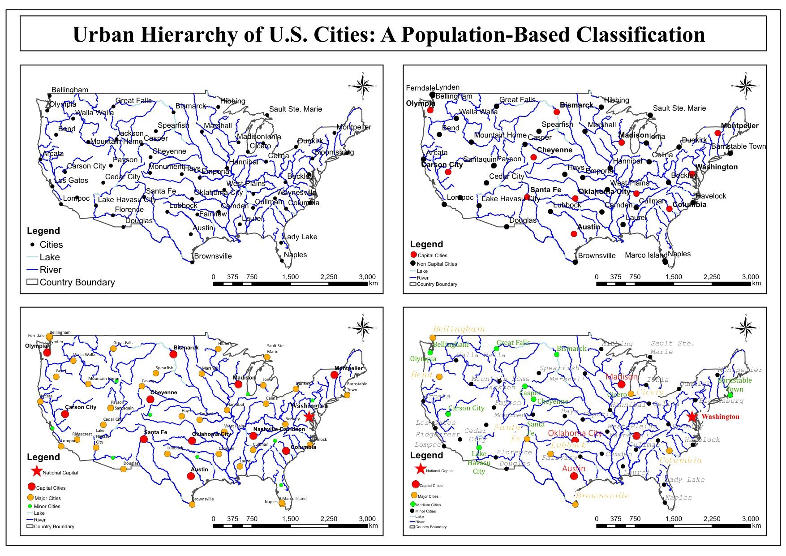
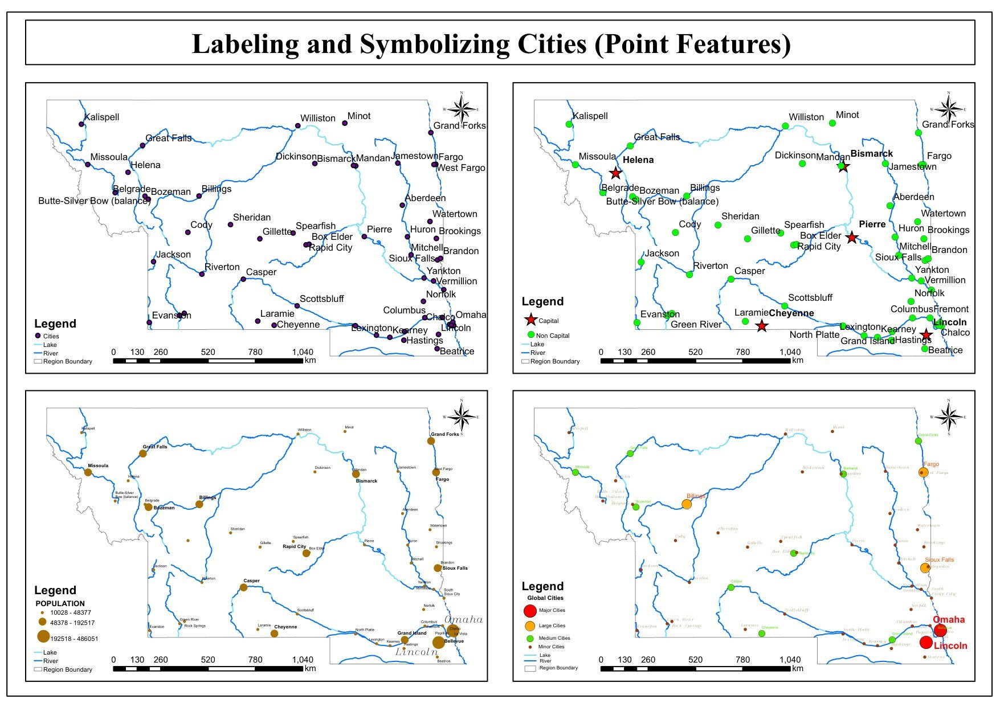

Cartography & Thematic MappingFig. 1 Urban hierarchy of U.S. cities: four labelling frames 
Fig. 2 U.S. political and physical features: multi-frame labelling Fig. 3 Labelling and symbolising cities (point features) 
Fig. 4 Labelling and symbolising roads (line features)
Reference Mapping with Text, Icons & Labels
Two cartography projects on label placement, symbol design and icon use for reference maps.
- Location
- United States (national, Arizona and Colorado map panels)
- Year
- 2025
- Client
- Upwork client
- Tools
- ArcGIS Pro




Challenge
Find the clearest way to label and symbolise cities, rivers, lakes, political and physical areas, and roads on reference maps.
Approach
- Built four map panels, each with three or four frames that progressively improve labelling
- Cities: from identical symbols to a four-tier hierarchy by population and capital status
- Water: curved labels that follow rivers and better lake label placement
- Political and physical areas: label colours matched to features, letter spacing, uppercase mountain ranges and spot elevations
- Roads: road hierarchy, highway shields instead of text, and controlled label density
Results
- The four-tier city hierarchy balances detail and readability best
- Curved river labels and highway shields gave the clearest maps
- Two illustrated reports explain the best frame in each panel